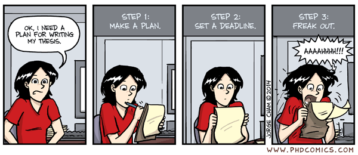

Estrategia rápida de postulación
Antes de postular, revisa activamente el sitio oficial: XVIII Encuentro de la Sociedad de Políticas Públicas
Lee las bases del concurso académico (link al formulario de inscripción).
Identifica las fechas críticas y los requisitos formales.
Revisa el perfil de la conferencista magistral (Laura Alfaro, BID/Harvard) para alinear tu propuesta con la línea temática del encuentro.
Analiza si tu investigación encaja en las áreas temáticas habilitadas.
Verifica los criterios de evaluación para calibrar el esfuerzo en cada sección del resumen.
💡 Tip: Guarda el cronograma. Una postulación exitosa no es solo buena investigación, es también buena gestión del tiempo.
| Aspecto | Información |
|---|---|
| Convocatoria | Investigaciones académicas y trabajos aplicados a políticas públicas, con sustento académico. |
| Postulación | Hasta el 30 de agosto de 2026, 23:59 horas. |
| Áreas temáticas | Hasta 2 áreas: educación, salud, pobreza/desigualdad, trabajo, migraciones, seguridad, medio ambiente, modernización del Estado, tecnología e IA, entre otras. |
| Resumen | Antecedentes, objetivos, metodología, resultados esperados y 3 a 5 palabras clave. |
| Preselección | Resultados a más tardar el 10 de septiembre de 2026. |
| Trabajo completo | Hasta el 18 de octubre de 2026. Máx. 10.000 palabras, español o inglés, formato PDF. |
| Selección definitiva | 12 de noviembre de 2026. |
| Presentación | Envío hasta el 10 de diciembre de 2026. Hasta 10 minutos por autor. |
| Encuentro | 17 de diciembre de 2026 — Universidad San Sebastián. |
| Criterio | Ponderación |
|---|---|
| Impacto potencial en políticas públicas | 40% |
| Consistencia y coherencia | 20% |
| Claridad del resumen | 20% |
| Originalidad y aporte al conocimiento | 20% |
🎯 Estrategia: El 40% depende de la relevancia para políticas públicas. Diseña tu pregunta pensando en quién podría usar tus hallazgos.

No tenemos nada… Y eso está bien. Es el punto de partida de toda investigación.
Elige una estrategia:
Todos juntos — Un solo equipo, una sola pregunta, un solo abstract.
Dos grupos disparejos — Dos preguntas distintas, dos abstracts independientes.
Dos grupos de 2 y uno que se sacrifique y esté en los dos — Mayor cobertura temática, pero mayor carga individual.
Individual — Cada uno por su cuenta, máxima autonomía, máxima responsabilidad.
⏱️ Tiempo real: Hasta el 30 de agosto. Elegir mal ahora cuesta caro después.
| Enfoque | Descripción | ¿Cuándo usarlo? |
|---|---|---|
| Top-down | Parte de un gap teórico o vacío en la literatura. Identificas lo que falta saber y diseñas la pregunta para llenarlo. | Cuando dominas la literatura del tema. |
| Bottom-up | Parte de los datos disponibles o de una observación empírica. Dejas que los datos te guíen hacia la pregunta. | Cuando tienes acceso a bases de datos ricas pero no has definido el ángulo. |
En este curso usaremos el enfoque Bottom-up.
Empezamos con los datos (CASEN / EANNA) y de ahí construimos la pregunta. https://observatorio.ministeriodesarrollosocial.gob.cl/encuesta-casen-2024 https://observatorio.ministeriodesarrollosocial.gob.cl/eanna-2023
| Tipo de Pregunta | Objetivo | Ejemplo |
|---|---|---|
| Descriptiva | Describir características, fenómenos o estados de una población. | ¿Cuáles son las características demográficas de los docentes? |
| Comparativa | Identificar diferencias o similitudes entre grupos. | ¿Hay diferencias en el rendimiento académico entre sexos? |
| Relacional | Explorar la asociación entre variables. | ¿Qué relación existe entre la motivación y el desempeño? |
| Explicativa | Determinar causas o efectos de un fenómeno. | ¿Cómo afecta el programa X a la variable Y? |
Important
Nota: En tesis doctorales, las preguntas son más de tipo explicativo (causal) o exploratorio profundo, debido a la necesidad de generar nuevo conocimiento y validar relaciones complejas.
🎯 Fórmula útil: ¿Cuál es el efecto de [variable independiente] sobre [variable dependiente] en [contexto/población]?
| Letra | Criterio | Pregunta guía |
|---|---|---|
| F | Feasible (Factible) | ¿Tienes los sujetos, la expertise técnica, el tiempo y los recursos para completarlo? |
| I | Interesting (Interesante) | ¿Capturará la curiosidad del investigador, la comunidad científica y el público general? |
| N | Novel (Novedoso) | ¿Aporta hallazgos nuevos, confirma/refuta resultados previos o ofrece una perspectiva fresca? |
| E | Ethical (Ético) | ¿Cumple con las normas éticas, seguridad, privacidad y consentimiento informado? |
| R | Relevant (Relevante) | ¿Tendrá un impacto tangible en la sociedad, la práctica clínica, las políticas públicas o la investigación futura? |
✅ Aplica FINER a tu pregunta antes de escribir una sola línea del abstract.
La pregunta de investigación es interrogativa; el objetivo es declarativo.
| Pregunta de investigación | Objetivo general |
|---|---|
| ¿Cuál es el efecto del acceso a educación técnica sobre la empleabilidad de jóvenes en zonas rurales? | Analizar el efecto del acceso a educación técnica sobre la empleabilidad de jóvenes en zonas rurales. |
| ¿De qué manera la migración venezolana ha impactado la oferta laboral en el sector servicios de Santiago? | Evaluar el impacto de la migración venezolana en la oferta laboral del sector servicios en Santiago. |
| ¿Existe una relación entre la exposición a contaminación atmosférica y el rendimiento académico en escuelas públicas? | Determinar la relación entre la exposición a contaminación atmosférica y el rendimiento académico en escuelas públicas. |
📝 Regla: Cambia la interrogación por un verbo de acción investigativa (analizar, evaluar, determinar, describir, comparar, etc.).
Los objetivos deben ser medibles, alcanzables y coherentes con la pregunta central.
| Categoría | Definición | Ejemplo |
|---|---|---|
| General | Expresa la finalidad última y principal del estudio. | Analizar el efecto de X sobre Y en la población Z. |
| Específicos | Desglosan el proceso lógico para alcanzar el objetivo general. | Identificar, Comparar, Calcular, Evaluar. |
Important
Regla de oro: Un objetivo bien planteado es un objetivo que puede ser evaluado al final del periodo de investigación.
La taxonomía permite jerarquizar los objetivos según la complejidad del proceso cognitivo requerido:
| Nivel Cognitivo | Verbos sugeridos | Objetivo |
|---|---|---|
| Recordar | Definir, listar, identificar | Recuperar conocimiento base. |
| Comprender | Explicar, clasificar, describir | Interpretar información. |
| Aplicar | Calcular, usar, implementar | Utilizar métodos en contextos. |
| Analizar | Comparar, diferenciar, estructurar | Descomponer partes y relaciones. |
| Evaluar | Juzgar, validar, argumentar | Emitir juicios de valor. |
| Crear | Diseñar, construir, formular | Generar nuevo conocimiento. |
Important
Nota: En investigación, los objetivos suelen transitar desde la comprensión y el análisis hacia la evaluación y creación.
1. CONTEXTO / ANTECEDENTES (1-2 oraciones)
→ ¿Por qué importa este tema?
2. PROBLEMA / GAP (1 oración)
→ ¿Qué no se sabe todavía?
3. PREGUNTA / OBJETIVO (1 oración)
→ ¿Qué investigas y para qué?
4. METODOLOGÍA (1-2 oraciones)
→ ¿Cómo lo hiciste o harás?
5. RESULTADOS / HALLAZGOS (1-2 oraciones)
→ ¿Qué encontraste o esperas encontrar?
6. IMPLICANCIAS / CONCLUSIÓN (1 oración)
→ ¿Qué significa esto para políticas públicas?📏 Límite del concurso: Máx. 150 palabras (antecedentes), 100 (metodología), 100 (resultados), 100 (objetivos). El abstract final del trabajo completo puede ser más extenso.
Subes y bajas desde el núcleo
┌─────────────────────────────┐
│ ANTECEDENTES / MARCO │ ← Bajas: ¿Por qué importa?
│ TEÓRICO / PROBLEMA │
└─────────────▼───────────────┘
│
┌──────────────────▼──────────────────┐
│ │
│ PREGUNTA DE INVESTIGACIÓN │ ← NÚCLEO
│ (¿Qué relación hay entre X e Y?) │
│ │
└──────────────────▼──────────────────┘
│
┌─────────────▼───────────────┐
│ OBJETIVO GENERAL │
└─────────────▼───────────────┘
│
┌─────────────▼───────────────┐
│ METODOLOGÍA │
│ (¿Cómo respondes?) │
└─────────────▼───────────────┘
│
┌─────────────▼───────────────┐
│ RESULTADOS / │
│ HALLAZGOS │
└─────────────▼───────────────┘
│
┌─────────────▼───────────────┐
│ IMPLICANCIAS / IMPACTO │ ← Subes: ¿Para qué sirve?
│ (Políticas Públicas) │
└─────────────┬───────────────┘
🔄 Dinámica: La pregunta es el eje. Desde ella “subes” hacia resultados e impacto, y “bajas” hacia los antecedentes que la justifican.
| Componente | Contenido |
|---|---|
| Introducción | Dato/contexto |
| Pregunta | ¿Cuál es el efecto de la participación en Chile Solidario sobre la desnutrición crónica infantil en hogares de extrema pobreza? |
| Objetivo | Evaluar el efecto de Chile Solidario sobre la desnutrición crónica infantil en hogares de extrema pobreza entre 2002 y 2006. |
| Metodología | Diseño cuasi-experimental con diferencias en diferencias, usando datos CASEN. |
| Resultados | La participación en el programa redujo significativamente la desnutrición crónica infantil en aprox. 4 puntos porcentuales. |
| Implicancia | Los programas de transferencias condicionadas pueden ser herramientas efectivas para mejorar indicadores de salud infantil en contextos de pobreza extrema. |
✅ Nota cómo todo fluye desde la pregunta: los antecedentes justifican por qué importa, y los resultados responden directamente a ella.
Encuesta de Caracterización Socioeconómica Nacional
Encuesta de Actividades de Niños, Niñas y Adolescentes
🤔 Pregunta clave: ¿Qué base te permite vincular dos variables de tu interés con suficiente variación y casos?
Entregable:
Genera una pregunta de investigación que relacione dos variables y que pueda responderse con CASEN o EANNA.
A partir de esa pregunta, escribe un abstract de no más de 450 palabras que incluya:
Recuerda: La pregunta es el núcleo. Todo debe subir y bajar desde ella.
📅 Deadline real: 24 de agosto de 2026. Empecemos ahora.
Mauricio Apablaza - Escritura Académica